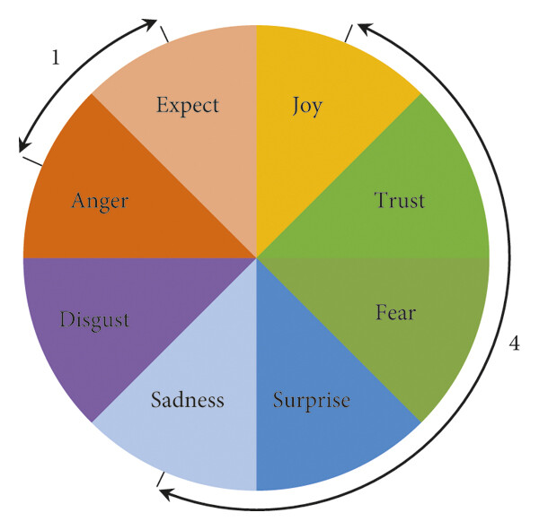

Emotion Detection
Emotion detection is another NLP technique aimed at identifying and quantifying human emotions expressed in text, which builds directly on traditional sentiment polarity analysis focusing on capturing more nuanced emotional states. While polarity classification identifies whether a text expresses positive, negative, or neutral sentiment, it does not capture the specific type of emotion behind that sentiment. For example, two negative texts could express very different emotions—one might convey anger, while another reflects sadness. By extending polarity into multiple emotional dimensions, emotion detection provides more granular and more actionable insights into how people truly feel.
We will use the syuzhet package (more info) to to help us classify emotions in our dataset. The name “syuzhet” is inspired by the work of Russian Formalists Victor Shklovsky and Vladimir Propp, who distinguished between two aspects of a narrative: the fabula and the syuzhet. The fabula represents the chronological sequence of events, while the syuzhet refers to the way these events are presented or structured; the narrative’s technique or “device.” In other words, syuzhet focuses on how the story (fabula) is organized and conveyed to the audience.
The syuzhet package implements the National Research Council Canada (NRC) Emotion Lexicon which maps words to basic emotions, in addition to polarity scores, allowing for fine-grained emotion scoring at the word, sentence, or document level.
This framework uses eight categories of emotions based on Robert Plutchik’s theory of the emotional wheel, a foundational model that illustrates the relationships between human emotions from a psychological perspective. Plutchik’s wheel identifies eight primary emotions: anger, disgust, sadness, surprise, fear, trust, joy, and anticipation. As illustrated in Figure ? below, these emotions are organized into four pairs of opposites on the wheel. Emotions positioned diagonally across from each other represent opposites, while adjacent emotions share similarities, reflecting a positive correlation.

The NRC Emotion Lexicon was developed as part of research into affective computing and sentiment analysis using a combination of manual annotation and crowdsourcing. Human annotators evaluated thousands of words, indicating which emotions were commonly associated with each word. This method ensured that the lexicon captured human-perceived emotional associations, rather than relying solely on statistical co-occurrences in text.
Since its release, the NRC Emotion Lexicon has become a widely used resource in computational social science, marketing analytics, and text mining, because it allows researchers to move beyond simple positive/negative polarity to fine-grained emotion detection, making it possible to analyze the emotional content of text at scale.
You may explore NRC’s lexicon Tableau dashboard to explore words associated with each emotion category:
Now that we have a better understandig of this package, let’s get back to business and perform emotion detection to our data:
sentences <- get_sentences(preprocessed$text_ready)
# Compute NRC sentiment per sentence
emotion_score <- get_nrc_sentiment(sentences)
# Grouping so ID to match sentences to their original row
preprocessed$sentence <- sentences
emotion_data <- bind_cols(preprocessed, emotion_score)
# Summarize overall emotions
emotion_summary <- emotion_summary %>%
arrange(desc(count)) %>% # sort data by count
mutate(emotion = fct_inorder(emotion)) # lock factor order
# Plot overall emotion
ggplot(emotion_summary, aes(x = emotion, y = count, fill = emotion)) +
geom_col(show.legend = FALSE) +
geom_text(aes(label = count),
hjust = -0.2, # position slightly outside the bar
size = 2) + # font size
scale_fill_manual(values = brewer.pal(10, "Paired")) + # we need more than 8 colors
theme_minimal(base_size = 12) +
labs(title = "Overall Emotion Distribution",
x = "Emotion",
y = "Total Count") +
coord_flip()
# Summary by season
# Create season column
emotion_seasons <- emotion_data %>%
mutate(season = ifelse(grepl("^s1_", id), "s1",
ifelse(grepl("^s2_", id), "s2", NA)))
# Summarize emotions per season
emotion_by_season <- emotion_seasons %>%
group_by(season) %>%
summarise(across(anger:positive, sum, na.rm = TRUE))
emotion_by_season
# Convert to long format for plotting
emotion_long <- emotion_by_season %>%
pivot_longer(
cols = anger:positive,
names_to = "emotion",
values_to = "count"
)
# Plot horizontal bars to compare seasons
ggplot(emotion_long,
aes(x = reorder(emotion, -count), y = count, fill = season)) +
geom_col(position = "dodge") +
geom_text(aes(label = count),
hjust = -0.2, # position slightly outside the bar
size = 2) + # font size
scale_fill_brewer(palette = "Set2") +
theme_minimal(base_size = 12) +
labs(
title = "Emotion Distribution by Season",
x = "Emotion",
y = "Total Count",
fill = "Season"
) +
coord_flip()
# Co-occurence Heatmap
emotion_matrix <- emotion_data %>%
select(anger:trust) # keeping only emotion columns; removing positive and negative
# Compute co-occurrence matrix
co_occurrence <- cor(emotion_matrix, method = "pearson") # values from -1 to 1
# Remove diagonal color
diag(co_occurrence) <- NA
# Convert to long format for ggplot
co_occurrence_long <- as.data.frame(as.table(co_occurrence))
colnames(co_occurrence_long) <- c("emotion1", "emotion2", "correlation")
# Plot heatmap
ggplot(co_occurrence_long, aes(x = emotion1, y = emotion2, fill = correlation)) +
geom_tile(color = "white") +
scale_fill_gradient2(mid = "white", high = "red", midpoint = 0,
limits = c(0,1), na.value = "grey95", name = "Correlation") +
theme_minimal(base_size = 12) +
theme(axis.text.x = element_text(angle = 45, hjust = 1)) +
labs(title = "Emotion Co-occurrence Heatmap",
x = "Emotion",
y = "Emotion")
# Save results
write_csv(emotion_data, "sentiment_emotion_results.csv")You might be wondering: if the syuzhet package also computes polarity, why did we choose sentimentr in our pipeline? The reason is that syuzhet does not inherently account for valence shifters. In the original syuzhet implementation, words are scored in isolation—so “good” = +1, “bad” = −1—regardless of nearby negations or intensifiers. For example, “not good” would still be counted as +1. Because sentimentr adjusts sentiment scores for negators and amplifiers, polarity results are more nuanced, robust, and reliable.